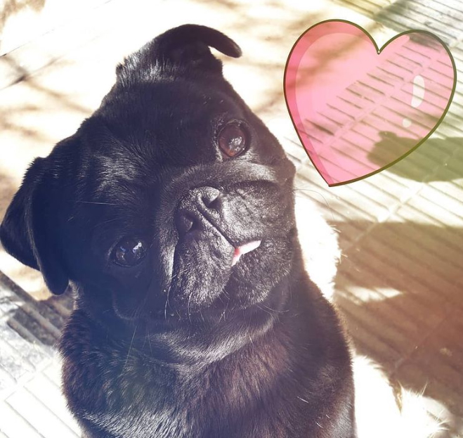

Bienvenidos al Criadero Castillo Azul,
mi nombre es Sara y me dedico desde el año 2000 a la crianza de la hermosa raza de perros Pug y Shih Tzu. En un ambiente hogareño, en nuestra casa donde vivo con mis tres hijos en familia, en donde compartimos con ellos. En un ambiente libre, con un gran patio con cesped que les permite jugar, correr y disfrutar de un día soleado. La tarea de criar Pugs y Shih Tzu es muy gratificante para mi, ya que diariamente recibo afecto y cariño de cada perrito.
